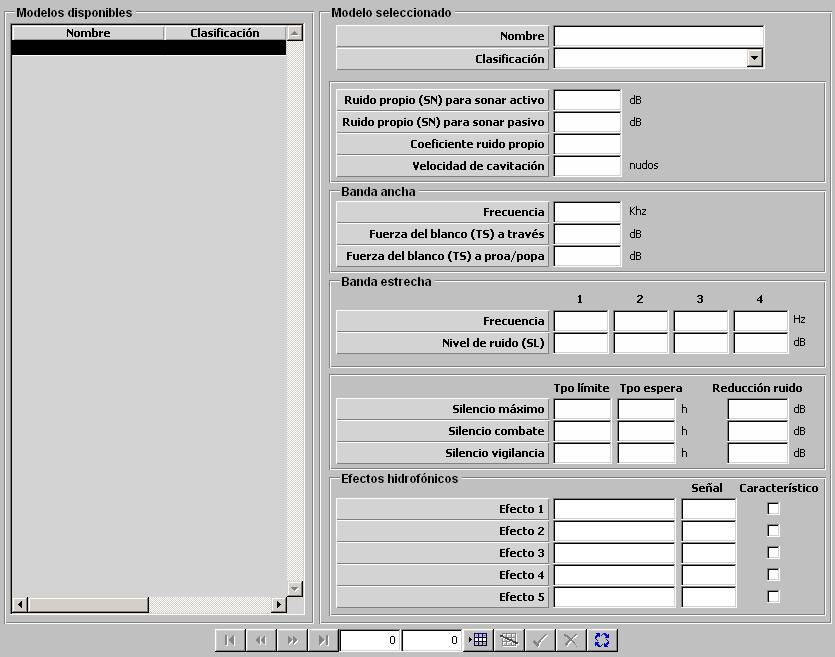

Firma Acústica de unidades Submarinas

Los parámetros de firma acústica de unidades submarinas caracterizan el nivel de señal emitido por plataformas de submarinos en banda ancha y en banda estrecha. La firma acústica asociada a cada plataforma junto con las condiciones ambientales (batitermia) y las características de un sonar determinan el exceso de señal recibido por el sonar, y por tanto, la detectabilidad de esta plataforma por dicho sonar.
Descripción de los parámetros:
Los siguientes parámetros modelan como afecta el ruido de la plataforma a la recepción de los sonares de la unidad propia.
Ruido Propio (SN) para Sonar Activo: Nivel de ruido propio en banda ancha de la plataforma recibido por un sonar activo propio, cuando la velocidad de la plataforma es inferior o igual a la velocidad óptima de operación de dicho sonar.
Unidades: dB
Rango: 0 – 999,9
Ruido Propio (SN) para Sonar Pasivo: Nivel de ruido propio en banda ancha y en banda estrecha de la plataforma recibido por un sonar pasivo propio, cuando la velocidad de la plataforma es inferior o igual a la velocidad óptima de operación de dicho sonar.
Unidades: dB
Rango: 0 – 999,9
Coeficiente de Ruido Propio: Este parámetro modela una corrección del ruido propio en banda ancha y en banda estrecha recibido por un sonar activo o pasivo propio, debida a la velocidad de la plataforma cuando dicha velocidad es superior a la velocidad óptima de operación del dicho sonar.
Unidades: ---
Rango: 0 – 9,9
Ejemplo:
Si Coeficiente SN = 0 ⇒ SN = SN.
Si Coeficiente SN = 0,25 ⇒ SN = SN + 0,25 · V / Voptima.
Si Coeficiente SN = 1 ⇒ SN = SN + V / Voptima.
Velocidad de Cavitación: Cuando la plataforma navega a una velocidad superior o igual a esta, se considera un incremento del ruido (configurable en Galeon.ini) propio emitido por la plataforma en banda ancha y en banda estrecha.
Unidades: nudos
Rango: 0 – 99,9
Los siguientes parámetros modelan el nivel de ruido generado por la plataforma cuando actúa como fuente de ruido y son usados para calcular el exceso de señal recibido por los sonares de otras unidades. Se distinguen los parámetros que caracterizan el ruido en Banda Ancha y en Banda Estrecha.
Parámetros de Banda Ancha: Los siguientes parámetros caracterizan el nivel de ruido propio en banda ancha emitido por la plataforma.
Frecuencia: Este parámetro es tenido en cuenta por el modelo de sonar pasivo para calcular el nivel de ruido radiado por la plataforma (SL) cuando actúa como fuente de ruido.
Unidades: kHz
Rango: 0 – 9999,99
Fuerza del Blanco (TS) a Través: Este parámetro es tenido en cuenta por el modelo de sonar activo para calcular la fuerza del contacto (TS) de la plataforma. Coincide con la fuerza del contacto cuando la plataforma se encuentra de través con respecto a la unidad que monta el sonar.
Unidades: dB
Rango: 0 – 99,9
Fuerza del Blanco (TS) a Proa/Popa: Este parámetro es tenido en cuenta por el modelo de sonar activo para calcular la fuerza del contacto (TS) de la plataforma. Coincide con la fuerza del contacto cuando la plataforma se encuentra a proa / popa con respecto a la unidad que monta el sonar.
Unidades: dB
Rango: 0 – 99,9
Parámetros de Banda Estrecha: Los siguientes parámetros caracterizan el nivel de ruido propio en banda estrecha emitido por la plataforma.
Frecuencias: Son cuatro frecuencias a las cuales se considera que la plataforma emite un pico de ruido, de nivel especificado en campo Nivel de Ruido (SL) asociado. El modelo de sonar pasivo comprueba si alguna de estas frecuencias está dentro de su margen de trabajo para considerar si detecta a la plataforma.
Unidades: Hz
Rango: 0 – 9999
Para cada una de estas frecuencias se especifica:
Nivel de Ruido (SL): Nivel de ruido emitido por la plataforma en la frecuencia asociada.
Unidades: dB
Rango: 0 – 999,9
Los siguientes parámetros afectan sólo cuando el Tipo de Propulsión de la plataforma es DIESEL y modelan el efecto sobre el nivel de ruido emitido (SL) por la plataforma de los tres posibles regímenes de Recarga de Batería de la unidad:
Frecuencias (diesel): Son cuatro frecuencias a las cuales se considera que la plataforma emite un pico de ruido cuando el submarino está recargando batería, de nivel especificado en campo Ruido por Carga (diesel) asociado. El modelo de sonar pasivo también comprueba si alguna de estas frecuencias está dentro de su margen de trabajo para considerar si detecta a la plataforma.
Unidades: Hz
Rango: 0 – 9999
Ruido por Carga (diesel): Nivel de ruido emitido por la plataforma para las cuatro frecuencias anteriores, según el régimen de recarga de batería establecido por la unidad.
Unidades: dB
Rango: 0 – 999,9
Los siguientes parámetros modelan el efecto sobre el nivel de ruido propio (SN) emitido por la plataforma de las tres posibles Condiciones de Silencio de la unidad:
Reducción de Ruido: Reducción del nivel de ruido propio emitido por la plataforma cuando la unidad ha establecido la condición de silencio asociada.
Unidades: dB
Rango: 0 – 99,9
Tiempo Límite: Tiempo máximo que puede permanecer la unidad con esta condición de silencio establecida.
Unidades: horas
Rango: 0 – 999,9
Tiempo Espera: Tiempo que tarda la unidad en establecer esta condición de silencio. Estos se consideran acumulativos, es decir, para entrar en Silencio Combate la unidad requiere el tiempo especificado para Silencio Vigilancia más el especificado para Silencio Combate.
Unidades: horas
Rango: 0 – 999,9
Los siguientes parámetros modelan los efectos hidrofónicos (hasta cinco) producidos por la plataforma.
Efecto: Nombre descriptivo del efecto hidrofónico. Este campo está limitado a 30 caracteres alfanuméricos.
Señal: Umbral de señal con el que se detecta a la unidad, por encima del cual el efecto hidrofónico es obtenido por la unidad detectora.
Unidades: dB
Rango: -99,9 – 99,9
Característico: Determina si el efecto es característico o no de la plataforma. Cuando una unidad obtiene todos los efectos hidrofónicos característicos de una plataforma, se produce automáticamente su identificación.